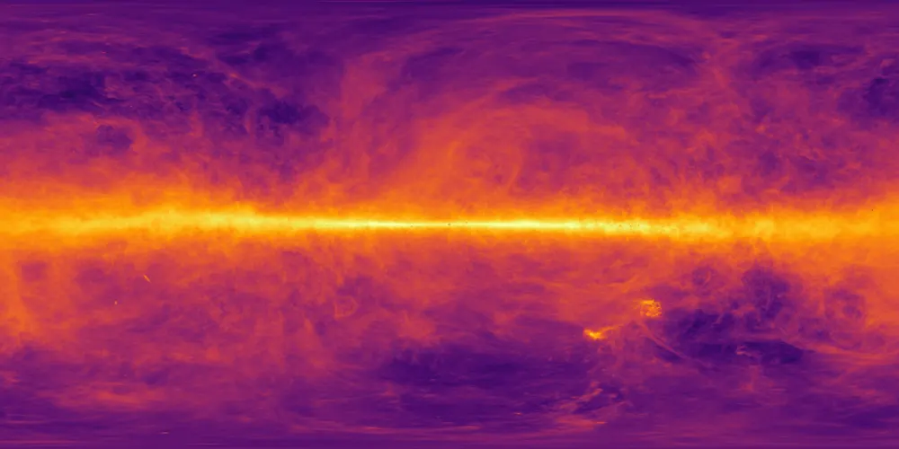
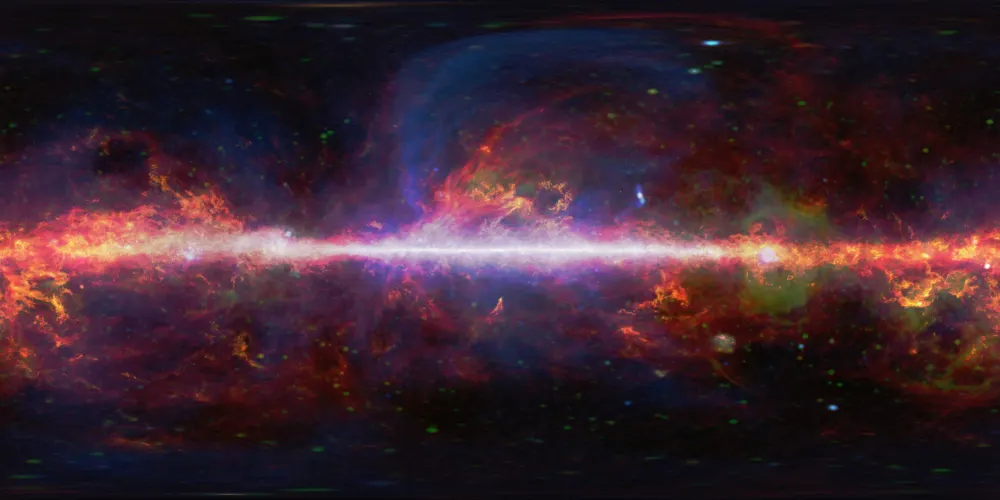
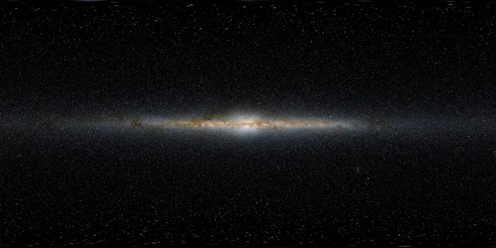
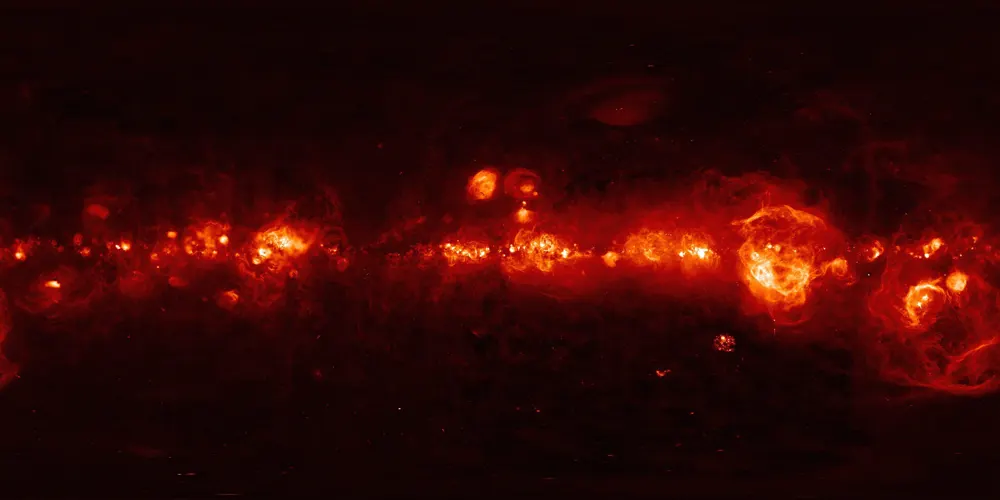
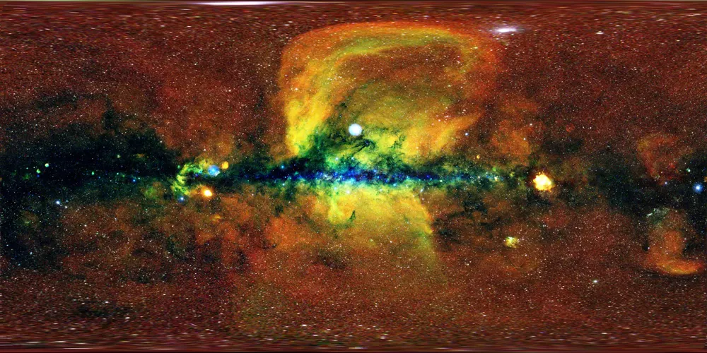
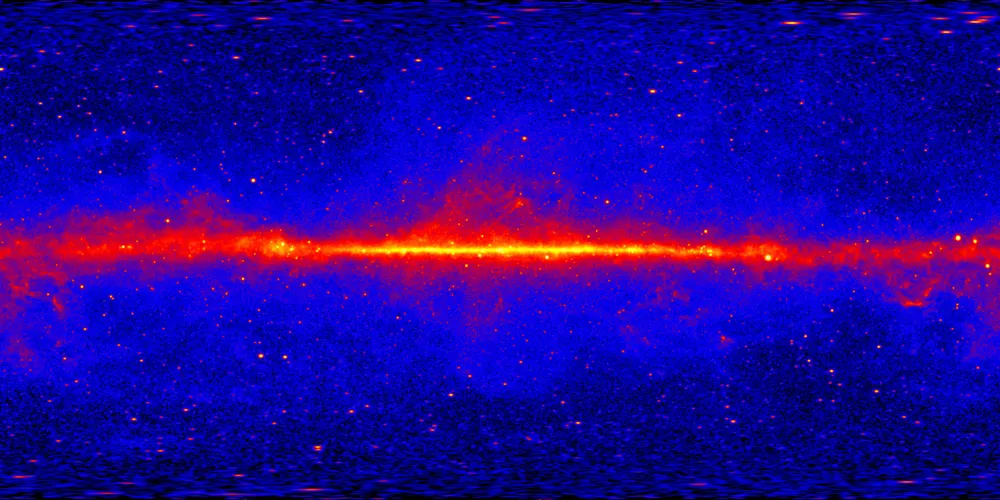

지상에서 올려다보고, 우주로 날아가고, 중력을 직접 다룹니다. 세 모드는 같은 시각과 같은 데이터를 쓰므로 어디서든 이어집니다. 여기에 배움의 자료와 실제 관측 데이터, 누구나 쓸 수 있게 하는 설정이 더해집니다.
관측지를 고르고 시각을 맞추면, 그 자리에서 실제로 보이는 하늘이 산 능선 위에 펼쳐집니다. 시간을 앞뒤로 돌려 별이 뜨고 지는 모습을 보고, 하늘의 점을 눌러 이름과 설명을 읽습니다.
산 능선의 높이는 실제 지형 고도 자료에서 계산했습니다. 사진으로 찍은 지평선 두 곳(파라날, 아르마소네스)을 더해 모두 7곳입니다.
같은 하늘을 전파부터 감마선까지 여섯 파장으로 바꿔 봅니다. 은하수가 파장마다 어떻게 다르게 보이는지 비교할 수 있습니다.






확대하면 DSS2, 2MASS, SDSS9, AllWISE 네 가지 관측 사진(HiPS)이 화면 조각 단위로 내려와 실제 사진 위에서 별을 봅니다. 더 들어가면 가이아 별이 G 13등급까지 약 428만 개 더 나타납니다.
지상에서 보던 행성을 누르면 화면이 그대로 이어져 우주로 나갑니다. 행성의 표면과 위성, 탐사선의 길, 소행성대, 그리고 태양계 바깥의 이웃 은하까지 한 공간에 있습니다.
행성의 크기 비율은 실제에 가깝게 두었습니다. 거리는 아닙니다.
태양과 여덟 행성에서 시작해, 질량을 바꾸고 천체를 더하고 블랙홀을 놓습니다. 궤도가 어떻게 변하는지, 대기가 어떻게 온도를 바꾸는지 눈으로 확인합니다. 바꾼 장면은 링크로 저장해 나눕니다.
왜 그렇게 보이는지를 먼저 보여 주고, 원리는 그다음, 수식은 마지막에 둡니다. 실습은 여섯 단계로 깊어지고, 마지막 단계에서는 실제 관측 자료를 다룹니다.
실습 21개. 6단계에서는 TESS 자료로 외계 행성을 찾고, SDSS 자료로 은하의 적색편이를 재고, 가이아 자료로 H-R도를 직접 그려 봅니다.
개념 카드, 7개 장. 화면에서 바로 열리는 짧은 설명
확인 문제. 카드마다 바로 한 문제, 더 깊이 세 문제
실습. 한 번에 하나씩 바꿔 보는 순서
한국 천문학 역사 항목. 다섯 항목은 그날의 하늘로 바로 갑니다
| 항목 | 규모 | 설명 |
|---|---|---|
| 가이아 별 목록 | 약 3,020,000 | 확대하면 불러옵니다. 맨눈 별 41,000개는 처음부터 표시합니다 |
| 가이아 G 13등급까지 | 약 4,280,000 | 더 깊이 확대하면 그 자리의 조각만 이어서 불러옵니다 |
| 한국 위성 카드 | 25종 | 아리랑, 천리안, 무궁화, 차세대중형위성, 누리호로 오른 위성 등의 발사일, 궤도, 운영 기관, 탑재체 |
| 성운·성단·은하 | 12,000 | NGC/IC 목록 전체 |
| 관측 사진 | 4 surveys | DSS2, 2MASS, SDSS9, AllWISE HiPS 타일을 확대에 맞춰 불러옵니다 |
| 전천 파장 사진 | 6 bands | 전파, 마이크로파, 적외선, H-알파, X선, 감마선 |
| 태양계 궤도 | JPL Horizons | 행성, 탐사선, 소천체 궤도 요소 |
| 인공위성 | 실시간 | CelesTrak 궤도 요소로 계산한 위치. 한국 위성 68기 |
| 오로라 | 실시간 | NOAA OVATION 예보로 그린 범위 |
| 어제의 지구 | 매일 | 하루 전 촬영한 실제 지구 사진 |
| 날씨 | 실시간 | 관측지의 현재 날씨(Open-Meteo) |
살아 있는 자료는 연결이 끊기면 마지막으로 받아 둔 사본을 쓰고, 그 사실을 화면에 알립니다.